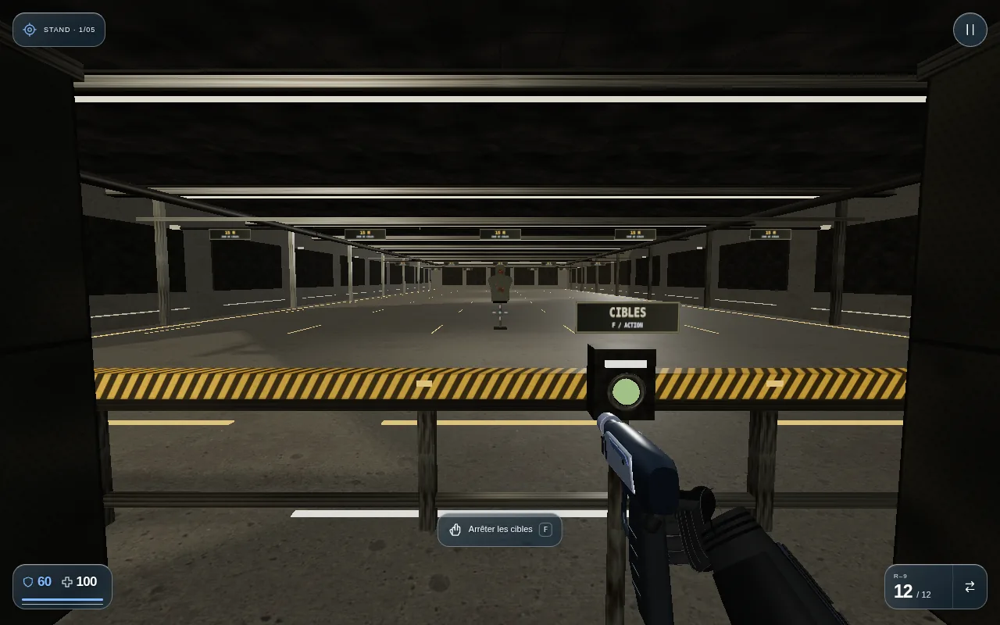
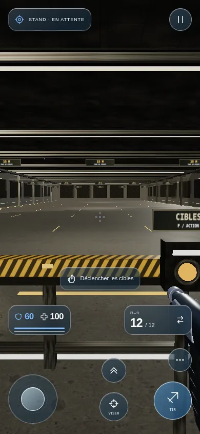

Un stand industriel, une commande dans votre box.
Béton gris texturé, acier usé, éclairages blancs chauds et silhouettes métalliques articulées. Les images ci-dessous montrent le rendu jouable en mode compatible.
Ouvrir le jeu · choisir Stand de tir →

À vous de lancer les cibles.
Le bouton ambré est à droite du poste. Approchez-vous puis utilisez F au clavier, l’action tactile Déclencher les cibles ou le clic du stick de la main libre en VR.
Une seconde activation arrête l’exercice. Le chronomètre attend votre retour.
Le M12 marque les contacts de ses plombs et imprime une impulsion plus forte à la plaque. La visée épaulée réduit le léger mouvement de tenue sur écran.
Formats ordinateur et iPhone vérifiés en navigateur. Essai physique Quest à effectuer.